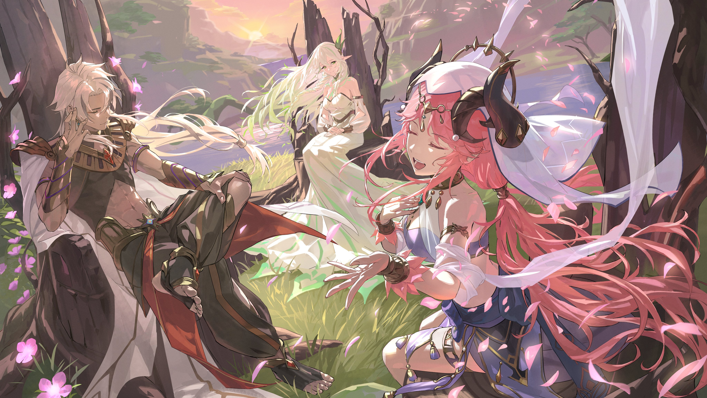

flowchart TD
subgraph DeshretOrigin["King Deshret Origin"];
A00[At an unknown time in the past, King Deshret was born with the God name 'Amun'.
He becomes the ruler of the desert Sumeru, ruling the 'Setekh' and the 'Hypostyle Desert']
end
subgraph NMOrigin["Nabu Malikata Origin"];
A01[Something happened in Celestia and Nabu Malikata got exiled.
She arrives on Sumeru. She is a Seelie survivor.
She wandered the desert for 72 days bare foot.
Wherever her foot bleeded, apparently rivers flew.
She created a mystical elemental species called 'Jinn'.
The Jinn were completely devoted to Nabu Malikata and called her their 'Mistress'.]
end
subgraph NabuAndDeshret["Nabu Malikata and King Deshret"];
A02[Eventually, Nabu Malikata and King Deshret met and became close friends
These two together created the city 'Ay-Khanoum' with the Jinn.
'Ay-Khanoum' is known as the 'City of Jinn'. It was replete with purple 'Padisarah' flowers.
It was also technologically comparable to Deshret's kingdom.]
end
DeshretOrigin --> NabuAndDeshret;
NMOrigin --> NabuAndDeshret;
subgraph RukkhaOrigin["Rukkhadevata Origin"];
A03[At an unknown time in the past, Rukkhadevata was born.
It stands for reasonable speculation that Rukkhadevata might've been created in the same way Nahida was created.
Not much is known about Rukkhadevata when she was a child till she became an adult.
It is inferred that her consciousness is linked to the Irminsul tree right from birth.]
end
RukkhaOrigin --> TrioMeeting;
NabuAndDeshret --> TrioMeeting;
subgraph TrioMeeting["The Three Gods Meet"];
A04[By miracle of fate, the three gods got to know each other.
In due time, the three gods became great friends.]
A04 --> B04[ Image Credit: HICO, Twitter handle: BUM_HICO]
B04 --> C04[On one Rukkhadevata's birthday, the gods met and had a great party.Rukkhadevata sang, Deshret and others were happily tipsy, Nabu Malikata started to dance.
Countless beautiful purple 'Padisarah' flowers blossomed all over the land.
From that day onwards, Rukkhadevata's birthday was celebrated as 'Sabzeruz' festival.
This feat of Nabu Malikata is central to the 'Sabzeruz' festival.
Nabu Malikata was called 'Goddess of Flowers' for this feat and her previous feats.
Several years/decades later, Celestia contacts Deshret and proposes to give him a 'Gnosis'.
Deshret refuses the 'Gnosis' and tells Celestia that the three gods will co-rule Sumeru.]
end
TrioMeeting --> DeshretAndNabu;
TrioMeeting --> RukkhaAndNabu;
subgraph DeshretAndNabu["King Deshret and Nabu Malikata"];
A05[It is implied/speculated that King Deshret had a liking for Nabu Malikata
Along with his implied liking for Nabu Malikata, Deshret hated the Celestia's rule.
He openly had many discussions with Nabu Malikata to learn skills and knowledge about the truth of this world.
Although hesitant at first, Nabu Malikata relented and shared many 'secrets' of Celestia.
Nabu told about the Heavenly Principles, how Celestia rains celestial nails across the land to subdue major forbidden knowledge incidents.
Nabu also told about how Celestia destroys civilizations who violated its rule.
Nabu finally told about the Abyssal Power/Forbidden Knowledge to Deshret.
At his repeated request, Nabu Malikata also shared to him some methods to harness the Forbidden Knowledge.
Nabu Malikata knew her time is short. It is implied that she had the power to forsee future.
She foresaw the destruction of 'Ay-Khanoum'.
The city Ay-Khanoum got destroyed as she foresaw, and only Deshret and some Jinn came alive unscathed.]
end
subgraph RukkhaAndNabu[Rukkhadevata and Nabu Malikata];
A06[Nabu Malikata knew her time is short. It is implied that she had the power to forsee future.
She foresaw a major calamity in the distant future that will be a major challenge to Sumeru and the whole world.
She creates a wooden bird called 'Simurgh' and leaves it in the hands of Rukkhadevata.
She tells Simurgh that Rukkhadevata is a much more virtuous and better person than she can ever be.
Nabu Malikata died with the downfall of Ay-Khanoum.]
end